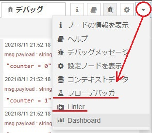

Node-REDのインストール手順は以下の通りです。
- Node.jsのインストール
- Node-REDのインストール
- Node-REDのパッケージのインストール
公式サイトのインストールの説明は、こちらです。
このサイトでは、Windows10 64ビットを使って説明します。
本説明は2024年5月版です。古い説明はこちらにあります。
Node.jsのインストール
Node-REDの推奨Node.jsのバージョンは、「Supported Node versions」を参考にしてください。
推奨されたバージョンのNode.jsの場合、そのバージョンのNode-REDおよびNode-RED用パッケージが用意されていますのでスムーズに環境構築ができます。しかし、サポートレベルのバージョンの場合は、ローカルPCでリビルドが必要になる場合があります。（環境によっては、エラーが発生する場合があります。）
Node-REDをインストールするためのソフトのインストーラの準備やバージョンの管理など、じょじょに大変になってきました。
Windowsのパッケージ マネージャである「Chocolatey」を使うことにします。「Chocolatey」の導入については、こちらをご覧ください。
すでに「Chocolatey」がインストールされていることを前提に説明を続けます。
コマンド プロンプトを管理者権限で起動し、以下を実行してください。
> choco search nodejs-lts -a -e
Chocolatey v2.2.2
nodejs-lts 20.12.2 [Approved]
nodejs-lts 20.12.1 [Approved]
nodejs-lts 20.12.0 [Approved]
・・・
nodejs-lts 18.20.2 [Approved]
nodejs-lts 18.20.1 [Approved]
nodejs-lts 18.20.0 [Approved]
・・・
nodejs-lts 16.20.2 [Approved]
nodejs-lts 16.20.1 [Approved]
nodejs-lts 16.20.0 [Approved]
・・・Node.jsのLTS版の最適なものを調べ、以下でインストールします。（以下は20.12.2の例です）
> choco install nodejs-lts --version 20.12.2環境変数NODE_PATHをC:\Users\[YOUR ACCOUNT]\AppData\Roaming\npm\node_modulesで作成し、環境変数パスに%NODE_PATH%を追加してください。(結構、重要ポイントです)
ちなみに、インストールを失敗したり、古いバージョンのものをアンインストールした場合、以下のフォルダを削除してから再実行すると良いと思います。
- C:\Program Files\nodejs
- C:\users\[YOUR ACCOUNT]\.node_repl_history
- C:\users\[YOUR ACCOUNT]\.npmrc
- C:\users\[YOUR ACCOUNT]\AppData\Roaming\npm
- C:\users\[YOUR ACCOUNT]\AppData\Roaming\npm-cache
- C:\users\[YOUR ACCOUNT]\.node-red
Node-REDのインストール
コマンド プロンプトを管理者権限で再起動し、以下を実行します。
> npm install -g --unsafe-perm node-redインストール後は以下で起動できます。
> node-redNode-REDのパッケージのインストール
Node-RED上でもできますが、DOSプロンプト上で行えば、複数のパッケージをまとめてインストールすることができます。
DOSプロンプトを起動し、C:\Users\[YOUR ACCOUNT]\.node-redで以下を実行します。「.node-red」フォルダの「node_modules」フォルダにインストールされます。
> npm install パッケージ名1 パケージ名2 パッケージ名3Node-REDをインストール後、「.node-red」フォルダが無い場合はNode-REDを起動してみてください。
npm install -gは「グローバルインストール」です。どのフォルダでインストールしてもシステム全体で使用できるように所定のフォルダにインストールされます。
npm installは「ローカルインストール」です。プロジェクトフォルダ（npm installを実行したフォルダ）にインストールされます。プロジェクト内でのみ使用するパッケージに適しています。Node-RED上でインストールした場合は「ローカルインストール」となりますので、統一するためにも「ローカルインストール」をお勧めします。
私がよくお世話になるパッケージは以下です。
- node-red-contrib-csvtojson
- CSVをJSONにパースするノード
- node-red-contrib-fs-ops
- 基本的なファイルシステム操作を実行するためのノード
- node-red-contrib-image-output
- 画像をプレビューするためのノード
- node-red-contrib-watchdirectory
- フォルダーを監視するためのノード
- node-red-dashboard
- Node-REDにダッシュボードを追加する
- node-red-node-base64
- BASE64形式にエンコード/デコードするためのノード
- node-red-node-serialport
- シリアルポート通信するためのノード
バージョン2.0以降の場合は以下も入れておくと便利です。
- node-red-debugger
- ブレークポイントを設定することができます
- nrlint
- ・潜在的な問題を特定するためのリンティングツール
- ・
npm install ～後に、npx nrlint --init > .nrlintrc.jsが必要です
